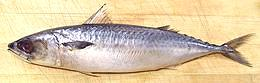

|
Atlantic Mackerel
[Saba (Japan); Scomber scombrus]
This North Atlantic mackerel is most commonly found off the European
coast and in Japanese sushi bars - large quantities are exported
to Japan from Norway. There are also strong populations off the U.S.
Atlantic coast and it is also found in the Mediterranean, the Black Sea
and off the coast of Morocco. This fish can grow to 23-1/2 inches, but
the photo specimen was 15 inches long and weighed 1-1/4 pounds before
being cleaned, stuffed and baked. This fish is kosher, though I'm not
certain how.
Details and Cooking
Chub Mackerel

[Pacific Mackerel, Japanese Mackerel, California Mackerel; Saba,
Honsaba, Masaba (Japan); Scomber japonicus |
Blue Mackerel, Southern Mackerel, Spotted Chub Mackerel; Gomasaba,
Marusaba (Japan); Scomber australasicus |
Atlantic Chub Mackerel; Scomber colias]
These three fish are, for all practical purposes, the same
fish, occupying tropical to subarctic waters worldwide. S.
japonicus and S. australasicus share the Indo-Pacific
region and S. colias occupies the North and South Atlantic.
S. japonicus, the most commercial of the three, grows to 25
inches and over 6 pounds, but the photo specimen is 14-1/4 inches and
1 pound. Held in disrespect in North America for being strong flavored
and oily, this fish is highly regarded in Japan (though Atlantic
Mackerel (S. scombrus) is preferred). Sold fresh, frozen,
salted, smoked and canned, these fish are not considered endangered.
They are said to have a few scales, enough to be kosher, but I have
yet to find any.
Details and Cooking
Indian Mackerel
[Alumahan (Philippine); Kembung (Indonesia), Bangda, Bangude, Aiyla,
Aiyla Meen (India); Rastrelliger kanagurta ]
A highly commercial Indo-West Pacific mackerel found from the Red Sea
and Madagascar to Samoa, these fish can grow to over 13 inches but the
photo specimen was 9 inches long and weighed 5-1/4 ounces. This fish
is not considered threatened and is sold fresh, frozen, canned,
dried-salted, smoked and made into fish sauce. It has just enough
scales to be kosher.
Details and Cooking
Island Mackerel
[Rastrelliger faughni]
This Indo West Pacific fish is native from India to as far east as Fiji
and as far north as Taiwan. It can grow to nearly 8 inches long and
1-1/2 pounds, but is usually smaller. Nonetheless, it supports a
fishery reported to be over 800,000 tonnes. I've not seen them
in Southern California, but they possibly exist here as one of
small Philippine dried fish (daing) under some other name.
Philippine fish names are chaotic.
IUCN Red List DD (Data Deficient).
Photo by Rodalpho B Reyes distributed under license
Creative Commons
Attribution-NonCommercial v3.0 unported..
Japanese Mackerel
More than one fish - see Chub Mackerel and
Spotted Mackerel
Short Mackerel
[Hasa-hasa (Philippine); Pla thu (Thai); Rastrelliger brachysoma]
This fish is native to the seas of Southeast Asia as far as Fiji, but
doesn't venture much into the Indian Ocean. It can grow to nearly 13
inches long, but is more commonly about 8 inches. This fish is very
important in the cuisines of Thailand, the Philippines and other
Southeast Asian countries. Note: I have seen fish in
Philippine markets in Los Angeles labeled "Hasa-hasa" that was
actually Bigeye Scad. As served in
Thailand, Short Mackerel looks a little strange, because the backbone
is broken just behind the head, which is bent down so the fish fits
in the bamboo steamers used to cook it in salt brine. This fish is
interchangeable with Indian Mackerel.
IUCN Red List DD (Data Deficient), but seriously depleted in
the Gulf of Thailand due to overfishing.
Details and Cooking.
Photo by Sahat Ratmuangkhwang distributed under license
Creative Commons
Attribution-ShareAlike v3.0 unported..
Smoked Mackerel
[Scomber spp.]
Mackerel is an oily fish with robust flavor which makes it an excellent
candidate for smoking. Atlantic mackerel is preferred but Chub
Mackerel is also used. For details see
Cold Smoked Fish
|

 [Pacific Saury; Sanma (japanese); Cololabis saira of family
Scomberesocidae of order Beloniformes]
[Pacific Saury; Sanma (japanese); Cololabis saira of family
Scomberesocidae of order Beloniformes]